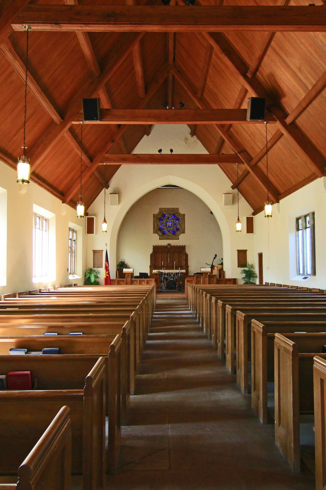
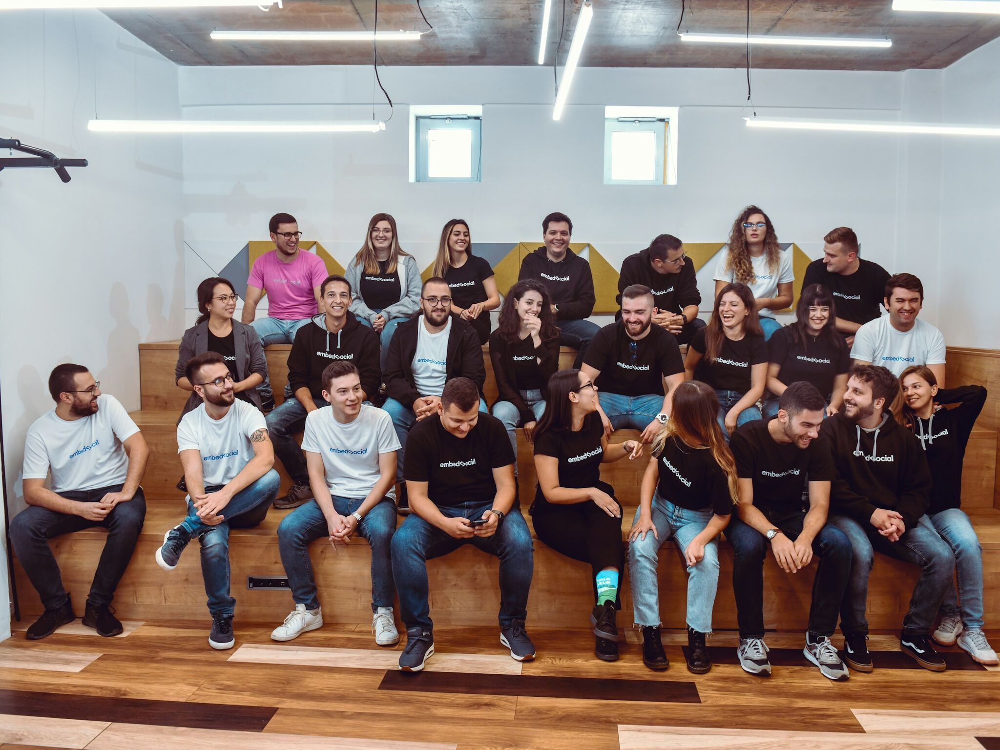

Active Shooter Response Training for Places of Worship
Purpose-built training that helps faith leaders, staff, congregations, and volunteer security teams protect their people while preserving the openness and mission of worship environments.


The Unique Balance of Openness & Safety in Faith Communities
Places of worship are designed to welcome everyone. That openness, combined with volunteer-led teams, varied schedules, and large gatherings, creates unique challenges during critical incidents. Without training that respects both mission and reality, leaders and volunteers are left unsure how to act when seconds matter.

Training That Supports Mission, People, & Preparedness
Northwatch Safety delivers active shooter response training specifically designed for places of worship. Our approach emphasizes decision-making, communication, and teamwork tailored to volunteer security teams, staff, and clergy. Training is delivered responsibly to strengthen readiness without compromising the welcoming nature of your faith community.
What Training for Places of Worship Includes
Training for Your Entire Community
Training can be delivered to entire congregations, volunteer safety teams, staff and leadership, or any combination that best fits your community.
Environment-Specific Planning
Programs are tailored to your sanctuary, classrooms, fellowship areas, and campus layout.
Prevention & Immediate Response
Instruction addresses early warning signs, coordinated response, and life-saving actions during critical incidents.
Responsible, Mission-Aligned Instruction
Training is delivered with sensitivity to faith values, ensuring preparedness without fear-based messaging.
Rapid Response Medical Training
Approximately 25% of our program focuses on life-saving medical response. Because first responders cannot render aid until the threat is neutralized, it's vital that your people are prepared to control bleeding and stabilize those who may be injured in those critical first minutes.
Unsure How to Balance Safety & Hospitality?
We help faith leaders and security teams determine the right approach for their congregation, facilities, and volunteer structure.
How Training is Delivered for Places of Worship
Facility & Team Assessment
We assess your facilities, service schedules, volunteer structure, and existing preparedness efforts.
Turn Insights Into Action
Using our findings, we focus on the most pressing issues and help you prioritize next steps to improve security. Training is tailored to your population, with attention to the unique risks and realities of your environment.
On-Site Training & Ongoing Support
Training is delivered on-site with practical guidance and recommendations, with in-person and online options for ongoing training.
Voices From the Field

Northwatch made a difficult subject approachable for our congregation. People left feeling prepared rather than anxious.
After selecting Cole and Northwatch Safety from a group of highly qualified candidate companies, we have been extremely pleased with the level of service and detail provided to our church. We were in the early stages of improving our overall safety plan and realized that with an organization as large as we are, we needed professional help. Northwatch Safety has helped us work through the difficult proposition of being ‘safer’ while continuing to be a church - which means being open to receiving those who want and need to be here. Our church used Northwatch Safety to do a full assessment including physical and operational process improvement, training for our members and staff, as well as the Prairie View Academy. We can highly recommend Northwatch Safety. Cole has a unique and applicable background, as well as a passion for what he is doing, which comes through in all his communication and training.
Northwatch helped us look at our campus with fresh eyes. The vulnerability assessment was detailed, prioritized and realistic about our budget.

Northwatch trained our entire faculty in a single in-service day, and the feedback was the best we have ever received. The instructors were calm, credible and practical, and our staff left with a plan they can actually use.
Our team is spread across three shifts, and Northwatch worked around every one of them. Everyone received the same high-quality training.
The training was sobering without being frightening. Our volunteers asked questions for an hour afterwards, which tells you how engaged they were.
Clear, organized and genuinely helpful. The written recommendations gave our facilities team a roadmap for the next two years.
Northwatch trained our entire faculty in a single in-service day, and the feedback was the best we have ever received. The instructors were calm, credible and practical, and our staff left with a plan they can actually use.
Top Training for Places of Worship Nationwide
Based in Ohio, Northwatch Safety partners with faith communities across the United States to deliver active shooter response training specific to the needs of places of worship.


Why Faith Communities Choose Northwatch Safety
Northwatch Safety was founded by Cole Brennan following nearly two decades in law enforcement and high-risk operations. That experience revealed the need for training that reflects real-world conditions while respecting the values of the communities it serves.
Today, Northwatch Safety helps faith communities prepare responsibly, equipping leaders and volunteers with practical training grounded in experience, evidence, and care for people.
Active Shooter Response Training for Churches & Places of Worship
Active shooter response training for places of worship must balance preparedness with hospitality and mission. Northwatch Safety provides worship-specific training designed to help churches, synagogues, mosques, and faith campuses prepare staff and volunteer teams to respond effectively during violent critical incidents.
Our programs focus on decision-making, communication, and coordinated response tailored to sanctuaries, classrooms, and multi-use worship facilities. By addressing prevention, early indicators, and immediate response, Northwatch Safety helps faith communities build preparedness that supports life safety without disrupting the welcoming nature of worship.
Faith communities across the country trust Northwatch Safety for active shooter response training that is responsibly delivered, practical, and grounded in real-world experience rather than fear-based instruction.

Questions
Find answers about our places of worship training and what to expect.
No. Our hands-on, in-person approach is what makes our training so impactful. For clients who have completed our in-person training within the last two years, we offer an online refresher course to help reinforce their skills.
Our training is per-person on a sliding scale. Please contact us for details.
Yes!
Yes. This training is designed with civilians in mind and is delivered thoughtfully and responsibly. While the topic may be challenging or emotionally sensitive, the focus is on practical strategies and clear roles that help people protect themselves and one another. The training avoids unnecessary graphic content, includes clear expectations, and is structured to support confidence and preparedness rather than fear.
Yes. We are more than happy to discuss your needs with no obligation and help you decide the next best step.
Check out our What We Do page to learn how we developed the R.E.A.D.Y. curriculum and how we deliver our program with sensitivity and impact, setting us apart from standard active shooter training programs.
Our training is designed specifically for adults. We can provide guidance for specific groups or roles upon request.
You are a first responder. There is no waiting for the “good guys” to arrive. You have to act. Research shows that the first few minutes of an attack often determine the outcome, and by that time, professional responders may not yet be on the scene. Our training equips places of worship with the skills and confidence to act decisively in critical moments, protecting themselves and others.
Protect Your Congregation with Care & Clarity
Your faith community deserves training that supports both safety and mission. We help places of worship prepare with clarity, responsibility, and respect.